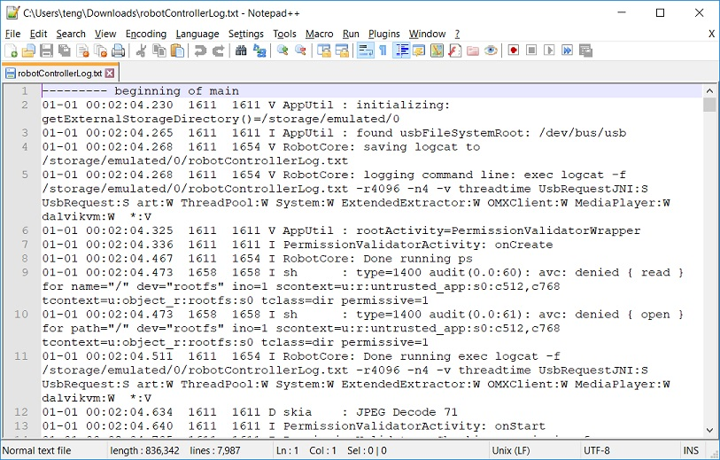
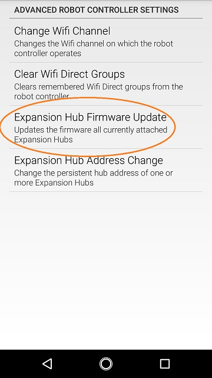
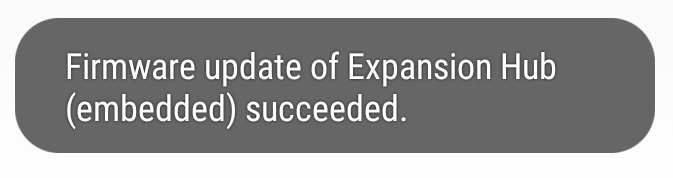

Managing a Smartphone Robot Controller
Changing the Name
In order to comply with the Competition Manual, the name of the Robot Controller (RC) smartphone should be changed.
This can be done in the RC app or in a paired DS app, as described below. (These steps also work for changing the name of a Control Hub, from a paired DS app.)
As an alternate, Renaming Devices show how to rename a smartphone using the Android Settings activity of the phone.
Important
Once the name of your Robot Controller is changed, you might need to reconnect your devices (Driver Station and programming laptop) to the newly changed network.
Changing the Name of a Robot Controller
1. On the Robot Controller phone or paired Driver Station phone, touch the three dots in the upper right hand corner to display a pop-up menu.

Select the Settings menu item from the pop-up menu.
Click on Robot Controller Name on the ROBOT CONTROLLER SETTINGS page.

4.Specify the new Robot Controller Name and press OK to accept the changes.

Changing the WiFi Channel
By default the smartphone Robot Controller automatically picks its own operating WiFi channel. However, it is sometimes necessary to specify the operating channel for the device.
For example, at a large competition an FTA might ask that you switch to a designated channel to avoid wireless interference that is present in the venue. Similarly, an FTA might ask you to switch to a specific channel because the FTA is monitoring that designated channel for interference or other wireless disruptions.
You can change the operating channel using the Advanced Settings menu on the Robot Controller or Driver Station.
Warning
Not every Android phone supports channel changing through the software. Refer to the Competition Manual for a list of FIRST-approved phones that support channel changing through the software.
Changing the WiFi Channel Instructions
1. Verify that the Driver Station is connected to your Robot Controller.
2. Tap the three dots in the upper right hand corner of the Driver Station’s main screen to display the pop-up menu and select Settings from the menu.
3. Scroll down to the ROBOT CONTROLLER SETTINGS section of the Settings screen and click on the words Advanced Settings to display the ADVANCED ROBOT CONTROLLER SETTINGS activity.

4. Click on the Change Wifi Channel link to display a list of available channels.

5. Select the desired operating channel. The phone should display a toast message if the channel change was successful.

6. Use the Android back arrow to return to the main Driver Station screen. The new operating channel should be displayed in the Network: section under the Robot Controller’s name
Downloading the Log File
It’s often helpful when troubleshooting problems with the Control System to download the log file from the Robot Controller. This can be done from the Manage page. Note that the log file name is robotControllerLog.txt by default.
Downloading the Log File Instructions
1. Verify that your laptop or Chromebook is connected to the Program & Manage wireless network of the smartphone Robot Controller. If you are connected to the network, you should be able to see the Robot Controller Connection Info page when you navigate to address “192.168.49.1:8080”:
If your laptop or Chromebook is not connected and you are unable to access the Robot Controller Connection Info page, then read the instructions in the following tutorial to learn how to connect to the Program & Manage network.
2. Click on the Manage link towards the top of the Robot Controller Connection Info page to navigate to the Manage page.
3. Click the Download Logs button to download the Robot Controller log file.

4. Verify that the Robot Controller log file was downloaded to the Downloads directory of your computer.
5. Use a text editor such as Notepad++ or Microsoft’s WordPad to open and view the contents of the log file. Note that the Windows app, Notepad, will not properly display the contents of the log file.
Updating the Expansion Hub Firmware
A Robot Controller phone connects to a standalone REV Robotics Expansion Hub using a USB connection. The purpose of the Expansion Hub is to facilitate communication between the Robot Controller and the motors, servos, and sensors of the robot. Periodically, REV Robotics may release new versions of the firmware which contains fixes and improvements for the Expansion Hub. The firmware releases are in the form of a binary (“.bin”) file.
The REV Hardware Client software can update the firmware of an Expansion Hub plugged directly into the computer via USB cable.
As an alternate, you can use the Manage interface from a laptop or Driver Station (DS) connected to a Robot Controller phone with Expansion Hub plugged in via USB. The Manage page allows you to upload an Expansion Hub’s firmware, or to update it using the included or uploaded version. New firmware images can be obtained from the REV Robotics website.
Also, included or uploaded Expansion Hub firmware can be updated in Robot Controller Advanced Settings, from a paired Driver Station (DS) app as shown below.
These three update methods do not apply to an Expansion Hub connected via RS485 data wire. Standalone Expansion Hubs must be updated by direct USB plug-in.
Updating the Expansion Hub Firmware Instructions
1. On the Manage page of the Robot Controller user interface, press the Select Firmware button to to select the firmware file that you would like to upload.

An _Upload_ button should appear after you successfully selected a file.
2. Press the Upload button to upload the firmware file from your computer to the Robot Controller.

The words “Firmware upload complete” should appear once the file has been uploaded successfully.
3. Make sure that your Expansion Hub is turned on and powered by a freshly charged 12V battery and that the Robot Controller phone is connected to the Expansion Hub through a USB connection. Note that the Robot Controller does not need to have the Expansion Hub included in an active configuration file in order for the update to work.

4. On the Driver Station, touch the three dots in the upper right hand corner to display a pop-up menu.
5. Select Settings from the pop-up menu to display the Settings activity.
6. On the Driver Station, scroll down and select the Advanced Settings item (under the ROBOT CONTROLLER SETTINGS category).

7. Select the Expansion Hub Firmware Update item on the ADVANCED ROBOT CONTROLLER SETTINGS activity.
8. If a firmware file that is different from the version currently installed on the Expansion Hub was successfully uploaded, the Driver Station should display some information about the current firmware version and the new firmware version. Press the Update Expansion Hub Firmware button to start the update process.

9. A progress bar will display while the firmware is being updated. Do not power off the Robot Controller/Expansion Hub during this process. The Driver Station will display a message when the update process is complete.
Updating the Robot Controller App
It is important to know how to update the Robot Controller app that is installed on your smartphone. FIRST periodically releases new versions of this app, which contain improvements and fixes, as well as season-specific data and features.
Note that you can see the Robot Controller app version number through the Robot Controller or Driver Station user interface. Select the About menu option on the Robot Controller or Driver Station and note the App Version number under the ABOUT ROBOT CONTROLLER section.

As of 2021, the apps (v 6.1 and higher) are no longer available on Google Play.
The REV Hardware Client software will allow you to download the apps to approved devices: REV Control Hub, REV Expansion Hub, REV Driver Hub, and approved Android devices. Here are some of the benefits:
Connect a REV Control Hub via WiFi.
One Click update of all software on connected devices.
Pre-download software updates without a connected device.
Back up and restore user data from Control Hub.
Install and switch between DS and RC applications on Android Devices.
Access the Robot Control Console on the Control Hub.
Teams using Blocks or OnBot Java for programming can use the REV Hardware Client to update the Robot Controller (RC) app on an RC phone.
Note it will take an estimated 7.5 minutes per device to complete this task.
As an alternate, the app releases are available on the FTCRobotController Github. Download the Robot Controller APK file to a computer, transfer it to the RC phone’s Downloads folder, then open that file to install the RC app. This process is called “side-loading”.
Tip
If you update the Robot Controller (RC) app, you should also update the Driver Station (DS) app to the same version number.
Important
Teams using Android Studio should not update the RC app with the REV Hardware Client or by side-loading. Instead, by updating to the newest version of the Android Studio project folder, you will update the Robot Controller app when you build the project and install it on your RC device. You can download the newest version of the project folder here.
Uploading a Custom Webcam Calibration File
The Robot Controller app has built-in calibration information for a variety of commonly available webcams. Users can also create their own custom calibration files and then upload these files to a Control Hub.
A commented example of what the contents of a calibration file should look like can be found in a file called teamwebcamcalibrations.xml, which is included with the Android Studio project folder. This example calibration file can be found here.
Uploading a Custom Webcam Calibration File Instructions
On the Manage page, click on the Select Webcam Calibration File button to select the calibration file.

An Upload button should appear if a file was successfully selected.
Click on the Upload button to upload the selected file. If the upload was successful, then the Manage page will display a message indicating that the upload has completed.